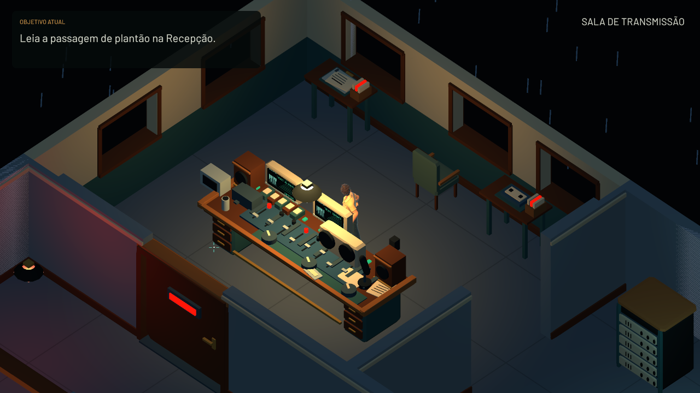
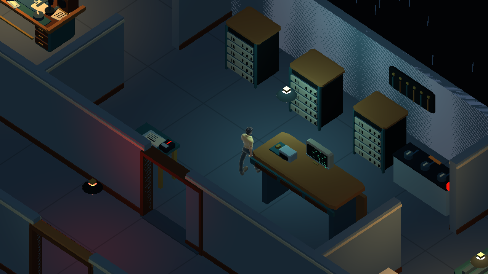
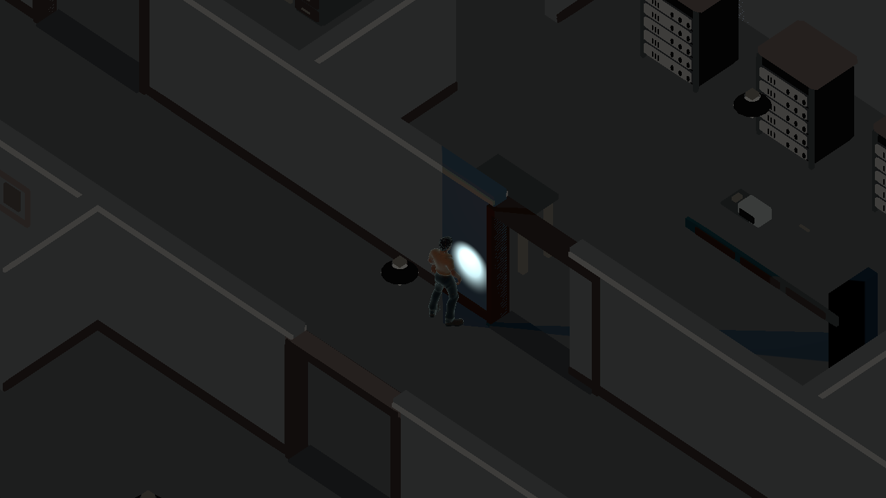

Um plantão interrompido.
Uma rádio sem energia.
Last Signal é um protótipo de terror e exploração com câmera isométrica, ambientado em Acorizal, Mato Grosso, em 1998.
O plantão começa com a passagem de serviço e uma checagem dos equipamentos. Depois do apagão, você precisa encontrar um fusível na Manutenção, recuperar a energia e descobrir por que o monitor de retorno parece responder sozinho.
- Os documentos fazem parte dos puzzlesCompare registros do Arquivo com anotações da Sala Técnica para entender como ajustar os equipamentos.
- Seus ruídos deixam pistasPassos, portas e objetos podem chamar a atenção do perseguidor. Ouvir o corredor ajuda a escolher quando sair.
- Armários e bancadas são abrigoVocê pode se esconder nos armários e sob as bancadas. Não há combate: observe a passagem e escolha a hora de continuar.
- A lanterna orienta o caminhoSem a lanterna, sua visão fica curta após o apagão. O feixe acompanha a direção para a qual você olha.
Transmissão, arquivos e salas de serviço.



Exploração antes e depois do apagão.
Trechos de gameplay gravados no protótipo. Sem revelar a criatura.
Comece seu plantão.
Protótipo jogável para PC Windows. Esta versão inclui um guia visual de controle, três saves manuais e três automáticos, com nomes editáveis. O início da caçada após ligar o gerador dá mais espaço para reagir. O jogo continua em desenvolvimento e recebe ajustes a partir do feedback.
Como instalar
- Baixe LastSignal-Windows-v0.54.0.zip.
- Clique com o botão direito no ZIP e escolha Extrair tudo.
- Mantenha todos os arquivos e pastas extraídos juntos.
- Abra LastSignal.exe dentro da pasta extraída.
- No menu, inicie a partida e leia o prólogo. Consulte Configurações para ver ou ajustar os controles.
Se o executável não abrir, verifique se a extração foi concluída. O jogo não deve ser executado diretamente de dentro do ZIP. Não exige conta ou conexão durante a partida.